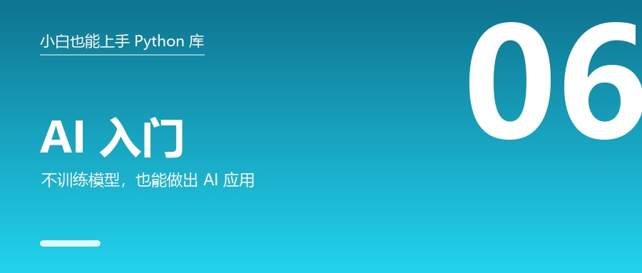

AI 入门：不训练模型，我也能做出 AI 应用

🎬 场景：你想做点"AI 的东西"，但一看教程："先装 CUDA、配置显卡、准备 10 万条数据、训练 12 小时……"
然后你就放弃了。
其实 90% 的 AI 应用根本不需要你训练模型。这篇讲三种"拿来就能用"的路线，10 行代码出成果。
先说结论：AI 应用有三条路，难度完全不同
| 路线 | 要做什么 | 难度 | 出成果速度 |
|---|---|---|---|
| ① 调用大模型 API | 拿一段文字让 GPT 处理 | ⭐ | 10 分钟 |
| ② 用现成模型做预测 | 拿表格数据训练个小模型 | ⭐⭐ | 1 天 |
| ③ 自己训练深度模型 | 训练神经网络 | ⭐⭐⭐⭐⭐ | 几周 |
新手一定要从 ① 和 ② 开始。这篇就讲这两个。
一、中文处理：先让程序"看懂"中文
1.1 jieba —— 中文分词
为什么需要它：英文有空格，"I love you".split() 就行。
中文不行 —— '我爱编程' 切不出来，程序不知道"爱"是一个词还是"爱编"是一个词。
pip install jiebaimport jieba
s = "高考志愿填报要综合考虑分数、城市和专业"
print("精确模式:", "/".join(jieba.cut(s)))
print("搜索模式:", "/".join(jieba.lcut_for_search(s)))输出形如：
精确模式: 高考/志愿/填报/要/综合/考虑/分数/、/城市/和/专业
搜索模式: 高考/志愿/填报/要/综合/考虑/分数/城市/专业💡 第一次运行会花一两秒"加载词典"，这是正常的。
能干什么：统计词频、提取关键词、做词云、评论分析。
1.2 pypinyin —— 汉字转拼音
from pypinyin import lazy_pinyin, Style
print("普通拼音:", lazy_pinyin("志愿填报"))
print("首字母 :", lazy_pinyin("志愿填报", style=Style.FIRST_LETTER))实测输出：
普通拼音: ['zhi', 'yuan', 'tian', 'bao']
首字母 : ['z', 'y', 't', 'b']用途：通讯录按拼音排序、检索、注音。
1.3 snownlp —— 中文情感分析（好评还是差评）
from snownlp import SnowNLP
print("好评程度:", round(SnowNLP("这门课太棒了，学到很多").sentiments, 3))
print("差评程度:", round(SnowNLP("太糟糕了，完全听不懂").sentiments, 3))结果会是：前者接近 1（正面），后者接近 0（负面）。
用途：电商评论监控、舆情分析、用户反馈分类。
二、表格数据预测：scikit-learn 三行训练一个模型
2.1 先理解"机器学习"在干什么
一句话：给它一堆"已知答案"的例子，让它自己找规律，然后预测"未知答案"的例子。
举个直观的例子：
你给它 1000 个学生的"学习时长、出勤率、作业完成度 + 最终分数"，
它学会规律后，你给它一个新学生的前三项，它能预测这个人的分数。
2.2 它是什么
scikit-learn 是传统机器学习的标准库。分类、回归、聚类、降维、模型评估全都有，而且：
所有模型的用法几乎一样：fit()训练 →predict()预测 →score()打分。
换模型常常只改一行代码。记住这个套路，你就入门了。
pip install scikit-learn2.3 完整例子（能直接跑）
from sklearn.datasets import load_iris
from sklearn.model_selection import train_test_split
from sklearn.ensemble import RandomForestClassifier
from sklearn.metrics import accuracy_score
# ① 拿数据（sklearn 自带鸢尾花数据集，150 条）
X, y = load_iris(return_X_y=True)
# ② 切分：80% 训练，20% 考试
Xtr, Xte, ytr, yte = train_test_split(X, y, test_size=0.2, random_state=42)
# ③ 选模型 + 训练
model = RandomForestClassifier(n_estimators=100, random_state=42)
model.fit(Xtr, ytr) # 学习规律
# ④ 预测 + 打分
pred = model.predict(Xte)
print("准确率:", round(accuracy_score(yte, pred), 4))
print("预测前 5 个:", pred[:5], " 真实答案:", yte[:5])实测输出：
准确率: 1.0
预测前 5 个: [1 0 2 1 1] 真实答案: [1 0 2 1 1]2.4 逐行解释（重点看这三行）
| 代码 | 在干什么 | 为什么重要 |
|---|---|---|
train_test_split |
把数据切成两份 | 绝不能拿训练过的数据考自己 —— 那叫作弊 |
model.fit(Xtr, ytr) |
用训练集学规律 | 这一步可能要几秒到几分钟 |
model.predict(Xte) |
拿没见过的新数据预测 | 这才是"真实使用"的场景 |
⚠️ 新手最常见的错误：不切分数据，直接fit完就predict同一批数据，然后惊讶"准确率 100%"。
这叫过拟合的假象，真实场景会一塌糊涂。
2.5 想让准确率再高一点
| 库 | 是什么 | 什么时候用 |
|---|---|---|
| xgboost / lightgbm | 梯度提升树，表格数据的擂台冠军 | Kaggle 竞赛标配 |
| seaborn | 看数据分布，快速找特征 | 做特征工程前 |
import xgboost as xgb
model = xgb.XGBClassifier(
n_estimators=300, # 300 棵树
learning_rate=0.05, # 学习率：越小越稳
max_depth=5,
eval_metric="auc",
early_stopping_rounds=30, # 验证集不提升就自动停
)💡 重要判断：表格数据先用 sklearn / xgboost，别一上来就上深度学习。
大多数实际问题数据量只有几千到几万条，XGBoost 就够了，而且训练只要几秒。
三、调用大模型：真正的"10 分钟出成果"
3.1 它是什么
不想自己训模型？直接调用别人训练好的大模型。openai 就是官方"打电话"的工具。
pip install openaiimport os
from openai import OpenAI
client = OpenAI(api_key=os.environ["OPENAI_API_KEY"]) # ★ 从环境变量读
resp = client.chat.completions.create(
model="gpt-4o-mini",
messages=[{"role": "user", "content": "用一句话解释什么是元组"}],
)
print(resp.choices[0].message.content)结果就是模型给你的那句回答（每次内容不同）。
3.2 🚨 但有个前提：绝对不能把 API Key 写在代码里
错误示范（每年都有人这么干，然后被盗刷）：
client = OpenAI(api_key="sk-proj-xxxxxxxxxx") # ❌ 一提交到 GitHub 就完了正确做法：
pip install python-dotenv新建 .env 文件（不要提交）：
OPENAI_API_KEY=sk-xxxxx代码里：
import os
from dotenv import load_dotenv
load_dotenv() # 从 .env 读
client = OpenAI(api_key=os.getenv("OPENAI_API_KEY"))别忘了把 .env 加进 .gitignore。
3.3 算清楚要花多少钱：tiktoken
大模型是按 token 计费的。tiktoken 能帮你提前估算。
import tiktoken
enc = tiktoken.get_encoding("cl100k_base")
text = "Python 是一门很好学的编程语言"
print("token 数:", len(enc.encode(text)))
print("切出来的 token:", enc.encode(text))💡 粗略经验：1 个中文字 ≈ 1~2 个 token，1 个英文单词 ≈ 1~1.5 个 token。
3.4 本地跑模型：transformers
如果不想用 API（或者没网），可以用 transformers 在本地跑预训练模型。
pip install transformersfrom transformers import pipeline
# 情感分析（第一次运行会自动下载模型，几百 MB）
clf = pipeline("sentiment-analysis",
model="distilbert-base-uncased-finetuned-sst-2-english")
print(clf("I love Python!")) # [{'label': 'POSITIVE', 'score': 0.999...}]
print(clf("This is terrible.")) # [{'label': 'NEGATIVE', 'score': 0.999...}]换个任务只要改一个参数：
| 任务 | 写法 |
|---|---|
| 文本分类 | pipeline("sentiment-analysis") |
| 文本生成 | pipeline("text-generation") |
| 摘要 | pipeline("summarization") |
| 翻译 | pipeline("translation") |
| 问答 | pipeline("question-answering") |
3.5 语义搜索：sentence-transformers
它是什么：把句子变成一串数字（向量），然后算"两句话有多像"。
用途：语义搜索（搜"怎么退钱"能找到"申请退款流程"）、找重复问题、文本聚类、给 RAG 做检索。
pip install sentence-transformersfrom sentence_transformers import SentenceTransformer
from sentence_transformers.util import cos_sim
m = SentenceTransformer("all-MiniLM-L6-v2")
v = m.encode(["我爱编程", "我喜歡寫程式", "今天天气不错"])
print("第1句 vs 第2句（意思相近）:", round(cos_sim(v[0], v[1]).item(), 3))
print("第1句 vs 第3句（不相关） :", round(cos_sim(v[0], v[2]).item(), 3))结果：第一组接近 1（很像），第二组明显更小。
💡 这就是现在很火的 RAG（知识库问答） 的底层原理：
把你的文档切成段 → 每段变成向量 → 用户提问时找最像的几段 → 塞给大模型回答。
四、AI 学习顺序（别跳步）
| 阶段 | 学什么 | 花多久 | 能做出什么 |
|---|---|---|---|
| 1️⃣ | pandas 把数据弄干净 | 1~2 周 | ——（但这步占实际工作 90% 时间） |
| 2️⃣ | scikit-learn 走通完整流程 | 1~2 周 | 房价预测、客户流失预测 |
| 3️⃣ | xgboost 提分 | 3~5 天 | 比赛级别的基础模型 |
| 4️⃣ | openai API + langchain | 1~2 周 | 知识库问答、文档助手 |
| 5️⃣ | transformers / 向量检索 | 2~4 周 | 语义搜索、分类器 |
| 6️⃣ | PyTorch（想做图像/微调再学） | 1~2 个月 | 自己的神经网络 |
⚠️ 最大的弯路：一上来就学 PyTorch，看完卷积神经网络还是不会解决自己的问题。
先把 1~3 走通，你就有"能用 AI 解决实际问题"的能力了。
🧰 附：AI 相关的「常用工具速查」
三条路线（中文处理 / 表格预测 / 大模型）的工具都在这。
🇨🇳 中文处理
| 库 | 常用工具 | 干什么 | 典型写法 |
|---|---|---|---|
| jieba | jieba.cut(句子) |
精确分词 | "/".join(jieba.cut(s)) |
jieba.lcut(s) |
直接返回列表 | 最常用 | |
jieba.lcut_for_search(s) |
搜索引擎模式 | 更细的切分 | |
jieba.add_word("新词") |
加自定义词 | 人名/专业词 | |
jieba.analyse.extract_tags(s, topK=10) |
关键词提取 | 找重点词 | |
| pypinyin | lazy_pinyin(汉字) |
转拼音 | ['zhi','yuan'] |
style=Style.FIRST_LETTER |
只要首字母 | 排序、检索 | |
| snownlp | SnowNLP(文本).sentiments |
情感值（0 负 ~ 1 正） | 评论分析 |
🤖 scikit-learn（表格预测）
| 工具 | 干什么 | 典型写法 |
|---|---|---|
train_test_split(X, y, test_size=0.2) |
切分训练/测试集 | 别用训练集考自己 |
模型.fit(X, y) |
训练 | 所有模型都一样 |
模型.predict(X) |
预测 | 出结果 |
模型.predict_proba(X) |
输出概率 | 想要"有多确定" |
accuracy_score(y, pred) |
准确率 | 最简单的评估 |
classification_report() |
精确率/召回率/F1 | 比准确率更靠谱 |
RandomForestClassifier() |
随机森林（首选） | 表格数据好用 |
StandardScaler() |
特征标准化 | 训练集 fit，测试集 transform |
RandomizedSearchCV / GridSearchCV |
自动调参 | 进阶提分 |
💬 大模型与向量
| 库 | 常用工具 | 干什么 | 典型写法 |
|---|---|---|---|
| openai | OpenAI(api_key=…) |
建客户端 | 密钥从环境变量读 |
chat.completions.create() |
对话补全 | 传 model + messages |
|
messages=[{"role":"user",...}] |
组织对话 | system 可设人设 | |
response_format={"type":"json_object"} |
强制返回 JSON | 结构化输出 | |
| tiktoken | encoding_for_model("gpt-4o") |
按模型取编码器 | 算费用 |
enc.encode(text) |
文本 → token 列表 | 数长度 | |
| transformers | pipeline("任务") |
一行跑各种任务 | 情感/摘要/翻译/问答 |
AutoTokenizer / AutoModel |
精细控制 | 微调时用 | |
| sentence-transformers | SentenceTransformer(模型) |
句向量 | all-MiniLM-L6-v2 |
model.encode([句子…]) |
批量转向量 | 做检索 | |
cos_sim(v1, v2) |
算相似度 | 接近 1 = 很像 |
⚠️ API Key 三不原则：不写死在代码里、不提交到 GitHub、不外发。用.env+python-dotenv读。
📌 这篇你学到了
- 三条路线：调 API（10 分钟）→ 训小模型（1 天）→ 训深度模型（几周）。从第一条开始。
- 中文处理：
jieba分词、pypinyin拼音、snownlp情感 scikit-learn的固定套路：切分 → fit → predict → 评估（绝不能拿训练集考自己）- 调大模型：API Key 必须放 .env，用
tiktoken估费用 - 语义相似度是 RAG 的基础
🎯 留个小作业（30 分钟能做完）
写一个"评论情感分析器"：
- 准备 10 条中文评论（好评差评混着）
- 用
snownlp给每条打分 - 打印出"最正面"和"最负面"的各一条
进阶：把 jieba 分词 + Counter 结合起来，找出这些评论里出现最多的 5 个词。
下一篇（完结篇）：《办公自动化 + 工程化：把重复工作交给代码，让代码看起来像老手》
👉 如果这篇帮你打破了"做 AI 必须会训练模型"的心理门槛，点个「赞」。
👉 关注我，下一篇是收尾：一套完整的自动化工作流 + 让代码专业的工具箱 + 120 个库的全景地图。